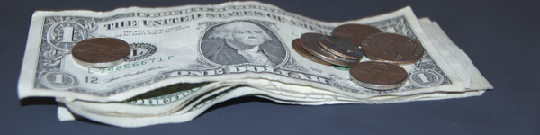
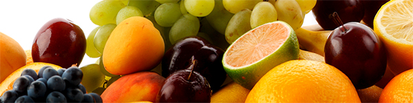

„Nachhaltigkeit...”
... ein Wort, dass jeder schon einmal gehört hat. Doch was genau bedeutet es?
Wikipedia sagt:
Nachhaltigkeit ist ein Handlungsprinzip zur Ressourcen-Nutzung, bei dem die Bewahrung der wesentlichen Eigenschaften, der Stabilität und der natürlichen Regenerationsfähigkeit des jeweiligen Systems im Vordergrund steht.
Aber, was heißt das schon? Der Grundgedanke der Nachhaltigkeit besteht darin, Resourcen so zu nutzen, dass sie genau so schnell (oder schneller) nachwachsen, als sie gebraucht werden. Das heißt, ein komplett nachhaltiges System kann (fast) unbegrenzt funktionieren.
Nachhaltiges Handeln besteht im Wesentlichen aus vier Grundbereichen, die alle miteinander vernetzt sind:
Ökologie Umwelt

Wir haben nur diese eine, unsere Erde. Es sollte also das gemeinsame Ziel aller sein, sie zu schützen und zu bewahren.
Allerdings benötigen wir auch Resourcen von der Erde: Nahrung, Wasser, Luft, Energie.
Um nachhaltig zu handeln, müssen wir also ein Gleichgewicht herstellen. Wir müssen die Resourcen der Erde so nutzen, dass sie nicht irgendwann aufgebraucht sind.
Ökonomie Wirtschaft
Ökonomisch Handeln heißt: Maximaler Profit, also geringe Ausgaben, hohe Einnahmen. Diese Vorgehensweise zieht viele Probleme nach sich. Sie läuft oft ohne Rücksicht auf andere ab, und ist oft nicht sehr langfristig geplant. („Heuschrecken”)
Nachhaltige Ökonomie heißt langfristig zu planen, und dafür zu sorgen, dass ein System (Unternehmen, Konzern, Markt) auch in Zukunft stabil bestehen kann. Ziel ist es auch hier, Gewinn zu erwirtschaften, allerdings nicht um jeden Preis.
Sozial Gesellschaft
Der Umgang mit anderen ist ebenso wichtig wie eine nachhaltige Wirtschaft. Das heißt, dass jeder das Recht auf eine faire Bezahlung und faire Arneitsbedingungen hat. Besonders in Entwicklungsländern sind die Arbeitsbedingungen unmenschlich und ausbeitend. (z.B. Kinderarbeit) Nur ein sozialer Umgang mit anderen Menschen kann für Frieden sorgen.
Gesundheit Mensch
Wie wir mit unserer Umwelt umgehen, sollten wir auch mit unserem Körper umgehen.
Wie auch mit der Umwelt sollten wir auch mit unserem Körper nachhaltig umgehen.
Dazu gehört unter anderem Hygiene (z.B. Händewaschen), das vermeiden von zu viel Stress und eine ausgewogene Ernährung.